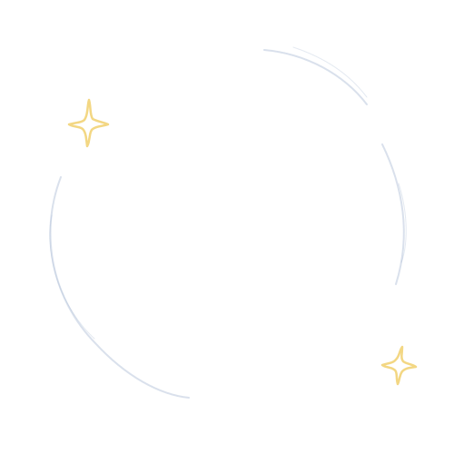
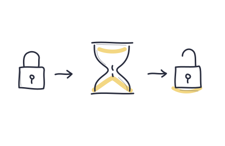

Private from the start
Your activity stays
on your device.
No account. No tracking. Every website check happens on your device, using the protections built into it.
Private app & website blocking
Block distracting apps, sites, and adult websites. Your activity stays on your device. Getting access back takes the time you chose.
Free · Source on GitHub · macOS 26 or later

Your apps can wait.
Private from the start
No account. No tracking. Every website check happens on your device, using the protections built into it.
For when a craving hits
Choose how long you’ll wait before you start a plan. When you ask for access, that wait begins. You can’t shorten it.

Included with Hard Pause
Turn on adult website blocking in your plan. Sites are checked on your device, and you can add specific sites too.
Get Hard Pause for freeGood to know
You choose the limits.
Hard Pause helps you keep them.
Yes. Hard Pause is free, including app, website, and adult website blocking. You can view the code on GitHub.
Yes. Ask to end your plan and wait for the time you chose. Pause plans also allow short breaks after a wait. Hard Pause plans have no breaks or automatic end.
You can make separate plans for work, evenings, or anything else. If two plans block the same app or site, both must allow access before it opens again.
Yes. On Mac, Hard Pause can set up Apple’s Screen Time protections for you and keep them in place until your chosen wait ends.
The iPhone and iPad app is in development. For now, you can get Hard Pause for Mac.
Start with your Mac
This is a development build. It is signed but not notarized by Apple, so your Mac may block it from opening.
Read the release notes